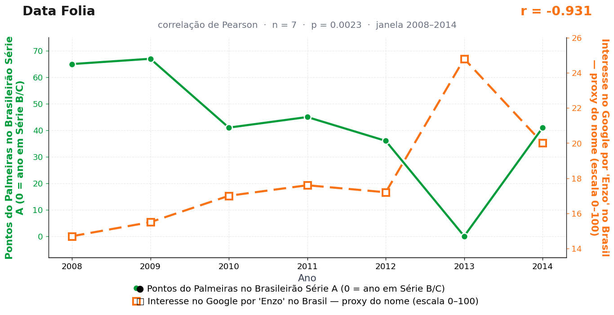

Post de 22/06/2026
A teoria
Quando o Palmeiras pisa na bola, o Brasil escolhe um nome. Tem lógica: se o presente do clube engasga, a torcida pelo menos garante que a próxima geração nasça preparada.
Por que Enzo? Porque é um nome que já chega passando pra trás. Soa a categoria de base estrangeira, drible curto, escolinha cara, jogador que custa fortuna mesmo aos 12 anos. É o oposto da defesa entregando contra o Avaí.
Os dados batem com uma precisão constrangedora. Em 2013, o Palmeiras zerou — caiu pra Série B — e a busca por "Enzo" disparou. Quando o time voltou em 2014, a busca recuou. r = −0,93. Estatisticamente: a tabela perdeu, as maternidades repuseram. Como se cada ponto não somado virasse uma certidão de nascimento nova.
A moral é simples. Quando o clube falha o presente, a família corrige o futuro. O Palmeiras forma o trauma, a torcida forma o Enzo.
O conselho gestor do Data Folia recomenda cautela: batizar o filho olhando a tabela do Brasileirão é uma decisão que acompanha a criança por muito mais tempo que o rebaixamento. Há métodos menos arriscados de homenagear a base estrangeira.
A teoria é ficção; a correlação é real: r = −0,93 (n = 7, p = 0,002).
Os dados por trás

- Pontos do Palmeiras no Brasileirão Série A (0 = ano em Série B/C) — 7 pontos anuais, período 2008–2014. Fonte: CBF / Wikipedia — Campeonato Brasileiro Série A.
- Interesse no Google por 'Enzo' no Brasil — proxy do nome (escala 0–100) — 7 pontos anuais, período 2008–2014. Fonte: Google Trends (pytrends).
Como as correlações deste site são encontradas — e por que você não deve confiar nelas — está explicado na nossa metodologia.
Por que isso acontece?
Um único ponto manda nesta correlação: 2013, o ano em que o Palmeiras aparece com 0 ponto na Série A (estava na Série B) e a busca por "Enzo" registra o pico de 24,8. Em uma amostra de 7 observações, um valor extremo assim funciona como alavanca — ele sozinho puxa a reta de regressão e infla o r para −0,93. Retire 2013 do conjunto e a correlação desmorona.
Há também um problema de medição dupla. Primeiro, o "0 ponto" é uma codificação nossa: o Palmeiras não teve desempenho zero em 2013, ele simplesmente jogou outra divisão — transformar isso em zero fabrica variância dramática. Segundo, o Google Trends mede buscas, não certidões de nascimento: gente pesquisando "Enzo" pode estar atrás de um jogador, uma novela ou um meme, e a escala 0–100 é renormalizada pelo próprio Google.
Quando o dado tem outlier, proxy ruidoso e n pequeno ao mesmo tempo, o coeficiente de Pearson vira massinha de modelar. A gente modelou — e avisou.
Post de 22/06/2026 · publicado também no Instagram @datafolia.